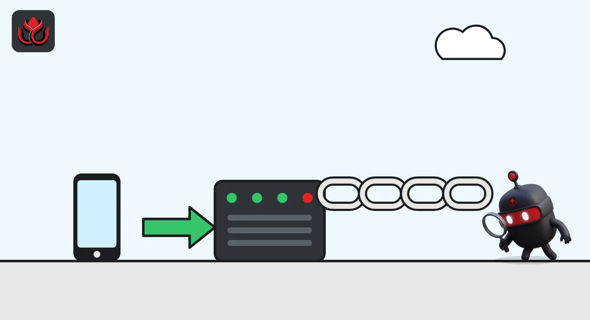
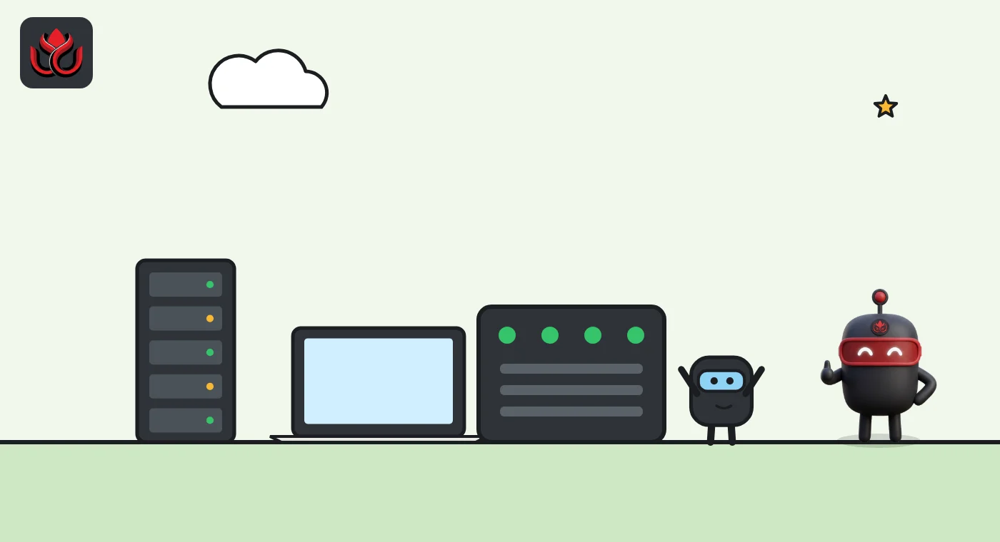

What is Bitcoin? How it works, why only 21 million exist and the risks
Bitcoin is a digital currency that moves directly between users on a public network, with no bank or company in the middle. Miners secure it with computing power, its supply is capped at 21 million coins, and BTC traded near $77,323 as of November 2, 2026.
Key points
- Bitcoin is peer-to-peer digital cash with no bank in the middle. Miners secure it with computing power (proof of work), and the chain with the most work is the accepted history.
- Supply is capped at 21 million BTC, and CoinGecko listed about 20.105 million in circulation, roughly 95.7%, on November 2, 2026. No company runs it: node operators choose the software, mainly the open-source Bitcoin Core.
- Key risks: sharp price swings, lost keys, irreversible mistakes, scams, and mining power concentrated in a few large pools.
 What DeepSea's data shows
What DeepSea's data shows
Big pools of bitcoin sit in a handful of known wallets. DeepSea's Binance page showed $52.39 billion of Binance's tracked holdings on the Bitcoin network on November 2, with two cold wallets alone holding $19.37 billion and $13.82 billion. DeepSea's exchanges page also listed $3.82 billion of bitcoin in wallets it labels as confiscated by the UK government.
Leveraged traders tracked by DeepSea held $679.40 million of BTC longs against $172.48 million of shorts on its long/short page, though bitcoin also showed the largest drop in net positioning that day, $97.22 million.
Data: DeepSea (desea.io), checked November 2, 2026, 12:58 p.m. ET.
What is Bitcoin?
Bitcoin is a digital currency and the network that runs it. It lets one person pay another over the internet without a bank, card company or payment app in between. The coin is called bitcoin, or BTC.
The idea comes from a short paper, Bitcoin: A Peer-to-Peer Electronic Cash System, signed Satoshi Nakamoto. It describes a purely peer-to-peer version of electronic cash, with payments sent straight from one party to another. The software that put the paper into practice was first released by Satoshi, and today's main client, Bitcoin Core, calls itself a direct descendant of it.
Bitcoin is the largest crypto asset. CoinGecko ranked it first with a market cap of about $1.555 trillion as of November 2, 2026, around 12:45 p.m. ET.
How does Bitcoin work?
The hard problem with digital money is double spending. A file can be copied, so what stops someone from spending the same coin twice? Banks solve this by keeping the ledger themselves. The whitepaper solves it with a public ledger that everyone can check and nobody controls.
Here is the basic loop:
- You sign a payment with a private key, a secret number only you should hold. The signature proves the coins are yours to spend.
- The payment is broadcast to the network and waits in a queue called the mempool.
- Miners bundle waiting payments into a block and race to find a number that gives the block a hash (a digital fingerprint) below a target. This is proof of work.
- The winner adds the block to the chain. Each block links to the one before it, so changing an old payment would mean redoing the work for that block and every block after it.
Nodes treat the chain with the most accumulated work as the true history. The paper describes this as one CPU, one vote: influence follows computing power, not the number of accounts. The system stays safe as long as honest miners together control more computing power than any group of attackers.
The network aims for one block about every 10 minutes and, per the Bitcoin developer guide, resets mining difficulty every 2,016 blocks (a two-week target) to hold that pace, as our mining and hashrate explainer details. As of November 2, 2026, mempool.space showed an average block time of about 9.9 minutes, 1,570 blocks left in the current period and an estimated difficulty change of +0.37%.

How many bitcoin are there?
Bitcoin's supply is capped at 21 million coins. New bitcoin enter circulation only as a reward to the miner of each block, which the whitepaper describes as the way coins are issued without any central authority. Miners also collect the fees attached to the payments they include.
According to bitcoin.org, that reward is cut in half every 210,000 blocks, about every four years. The last cut, at block 840,000 on April 20, 2024, took it to 3.125 BTC per block, and the next, at block 1,050,000, is expected around 2028. Our bitcoin halving explainer walks through the schedule and the math behind 21 million.
CoinGecko listed these figures as of November 2, 2026, around 12:45 p.m. ET:
- Price: about $77,322.69.
- Circulating supply: about 20.105 million BTC, out of a maximum of 21 million, so roughly 95.7% has been issued.
- Market cap: about $1.555 trillion.
- 24-hour trading volume: about $20.8 billion.
- All-time high: $126,080, so BTC was about 39% below its peak.
Who runs Bitcoin?
Nobody runs Bitcoin in the way a company runs a payment network. Three groups each hold part of the power.
Node operators run software that checks every block and payment against the rules and rejects anything that breaks them. They decide which software version to run, so a rule change only sticks if they adopt it.
Developers write that software. Bitcoin Core says it has a large open-source community, with contributors who write code, review, test, document and translate. Maintainers have commit access and merge changes the contributors agree on, acting as a final safety check. The project says it runs an open contributor model where anyone can propose patches.
Miners produce blocks, but they must follow the rules nodes enforce, or their blocks are rejected. Mining is also concentrated in pools that combine many machines. Over the week to November 2, 2026, mempool.space showed Foundry USA, AntPool and F2Pool together finding about 62% of blocks, with the network hashrate averaging 1.05 zettahashes per second.
Share of bitcoin blocks by mining pool, past week
% of blocks
Source: mempool.space mining dashboard, one-week window, as of November 2, 2026

How much does a bitcoin transaction cost?
Fees are set by demand for block space. Users bid in satoshis per virtual byte (sat/vB), where a satoshi is one hundred-millionth of a bitcoin, per bitcoin.org, and miners pick the best-paying payments first.
When the network is quiet, fees fall to the floor. As of November 2, 2026, mempool.space showed 1 sat/vB for every priority level, with about 49,145 payments waiting. In busy periods the same queue can push fees many times higher.
Many people never touch the network directly. They hold bitcoin on exchanges or through funds; our guide What is a bitcoin ETF? explains how spot funds hold coins for investors.
Is Bitcoin anonymous?
No, it is pseudonymous. Every payment is public, but addresses are not tied to names on the chain. The whitepaper compares it to a stock exchange that publishes trades without naming the traders, and it advises using a new key for each payment.
The paper also warns of the limit: when a payment combines several inputs, it can reveal they share an owner, and once one address is linked to a person, others may follow. Exchanges that check identity make that link easier.
What are the risks of Bitcoin?
Price risk. At about $77,323 on CoinGecko on November 2, 2026, BTC was roughly 39% below its all-time high. Large drops happen often.
Key risk. Whoever holds the private key controls the coins. Lose the key or the seed phrase that backs it up and the coins are gone for good. Hand it to a scammer and they can take everything.
No undo. Confirmed payments cannot be reversed. A wrong address or a fake support agent means a permanent loss.
Custody risk. Coins left with an exchange or other custodian depend on that firm's security and solvency.
Concentration. A few pools find most blocks. The security model assumes no single group controls most of the computing power, so that share is worth watching.
Rules and taxes. Laws on holding, trading and reporting bitcoin differ by country and keep changing.
LC Insight analysis
This section is our reading of the facts above, not a statement of fact.
- We think Bitcoin's real governance sits with node operators, not miners or developers. That makes the rules hard to change, which is the point for holders and a limit for anyone hoping for fast upgrades.
- Fees deserve more attention than they get. With the block reward halving every four years and fees at the 1 sat/vB floor on November 2, 2026, how miners get paid in the long run is still an open question.
- For most people the biggest danger is not the network but their own keys and the firms they trust with them. Bitcoin has no help desk, so a lost seed phrase or a fake support agent is the costliest mistake a holder can make.
What's next
- Share of blocks found by the largest mining pools
- Fee levels and mempool backlog as a share of miner income
- The countdown to the next halving at block 1,050,000
- New Bitcoin Core releases and node upgrade rates
Frequently asked questions
Who created Bitcoin?
The whitepaper and the first software were released under the name Satoshi Nakamoto. Bitcoin Core, today's main node software, describes itself as a direct descendant of that original client.
Can more than 21 million bitcoin ever be created?
Not under the current rules. CoinGecko lists a maximum supply of 21 million and about 20.105 million in circulation as of November 2, 2026. Changing the cap would require node operators to adopt new software.
Can you buy part of a bitcoin?
Yes. Bitcoin.org says one bitcoin equals 100,000,000 satoshis, and fees are quoted in satoshis per virtual byte.
Who controls Bitcoin Core?
No company. Bitcoin Core is an open-source project where anyone can propose changes; maintainers merge patches the contributors agree on, and node operators choose whether to run them.
How fast are bitcoin payments?
Blocks arrive about every 10 minutes on average. mempool.space showed an average of about 9.9 minutes as of November 2, 2026.
Disclaimer. This article is based on public information and the sources listed below as of the update time shown. It is for information only and is not investment, legal or tax advice. Figures may change as companies and authorities publish new data.
Sources
- Satoshi Nakamoto, Bitcoin: A Peer-to-Peer Electronic Cash System (bitcoin.org)
- Bitcoin Core, About
- Bitcoin Core, How to contribute code
- CoinGecko, Bitcoin, accessed November 2, 2026
- mempool.space, Bitcoin explorer and mining dashboard (mempool.space/mining), accessed November 2, 2026
- bitcoin.org, Bitcoin halving
- Bitcoin developer guide, Block chain
- bitcoin.org, Vocabulary